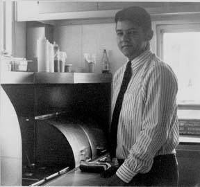

|
 |
"College radio, to me, just means weird music, no commercials, unprofessional DJ's. Part of the person being unprofessional or not having the best voice makes it more interesting. And when they mess up, that's even better. It's cool just to hear people trying to explain what happened. " |
|
I'm 28 and I work for Southeast Food Systems of Durham. My official title at Southeast
Food Systems is "Wiener King of Durham." No, I'm an area store manager, meaning I
have multiple stores that I manage and pretty much, I'm in total charge of daily
operations at all three stores. I'm on call all day, every day so I can't really go out of
town and break loose unless I clear it with my boss and such. I'm always responsible
for what goes on there, even when I'm not there. They can't support a manager in each
store because they're real small. We only run three employees at a time. In order to do
it we have to spread ourselves around, so I run three. I started out in management right
away 5 years ago. And here I am doing the same thing I did 5 years ago, I just
have more stores to do it in. I play intermural basketball. I go out drinking every night.
I’d always listened to XDU, since I grew up in Durham. I always liked things different. I wasn't really into that much alternative type stuff, but I was always listening to things that no one else heard of. I was bored with commercial radio b/c everyone knew all those bands. They didn't have to be weird or anything, I just liked to know about something before someone else knew about it. And XDU gave me that. Nobody in my high school or any of my friends even knew where it was on the dial, much less listened to it. I always wanted to do it. May of 94 I saw an ad on the back page of the Independent that XDU put in. They were looking for DJ's in the summer. I just followed through with the ad and got a hold of Chad and bought him beer since he was underage and automatically got a show. I was like "I’ll do anything, you know, whatever time." They had someone back out of a show on Thursday mornings 8-11 and Chad called me and gave me that one. So I was a Thursday 8-11 for probably a year and a half. It did kind of [conflict with work], but I would do a lot of work the night before to prepare myself. I would be out of there right at 11, so I could get to the store before the lunch crush. It was kind of a pain to do all that work the night before, but it was worth it. I still have the flow sheet from my first show and it's just so generic male vocal, indie- rock. I would get so many calls from people who’d say "This is so good, I love your show." And I was thinking, you know, this is not the right thing to do because this is what everybody hears and what they want to hear. And the requests that would come along with my show, like "Can you play Dinosaur Jr.?” or “Can you play the Cranberries?" and I’m like, I need to change what I’m doing because people are liking this too much. When I started I couldn't understand why everybody didn't have a show like that. Cause it was so good, you know, I thought my music was just so good. And looking back on it, it was just so boring. But I liked it at the time. I mean, I’ve changed a lot...I think when I made the jump, when I changed from the daytime to my 8 pm show, that's when I really made an effort to really explore the playlist. Because every other nighttime DJ I heard from 8-midnight was always playing stuff I’d never heard...I always go through new phases of music...I’ve gotten into truck driving music now and I’m totally obsessed with it and I will buy any trucking thing I can find or any country music recorded over 20 years ago I love. That's my phase right now. And it always comes back around. Music in general has changed, even commercial music has gotten a little bit more risky. They'll play Squirrel Nut Zippers now and that was unheard of back then. They were just straight ahead rock and roll. Things are just different now. I'll play a rock and roll song, or an indie-rock song every once in a while and it's good to hear it very once in a while. But my idea of what we should do at XDU is just play stuff you can't hear anywhere else. It's an educational thing. I don't like everything on the playlist, you know, but I learn about it and I appreciate it. And hell, I'll play it even if I don't really love it. If I feel like it's important, or it's important to people, I'll play it. My friends have stopped listening to my shows. They used to always listen to my shows and call in and request stuff. Now they won't even listen. They're like what the hell are you playing. I mean, they'll call me every once in a while and say "What the funk is that you're playing?"...and they just tune it out. The people that enjoy it in the community, we lose a lot of our best listeners to becoming DJ's, I think. Cause I was one of the best listeners. Everybody who, everybody it seems like, who likes that kind of music in this area, is drawn to the station and becomes a DJ. So we're killing our audience by putting us on the air. We listen to each other. I don't listen to XDU one fourth of what I used to. I knew all the DJ's. I listened all the time. I don't listen to it as much. That might have a lot to do with being on music staff too - hearing everything and then going out and buying every damn thing that I hear. And then having to listen to that too. I don't really have time as much just for the radio. |
After we started doing the giveaways, I felt that I was gaining a lot of musical
knowledge and getting free things, getting into the shows for free. I just wanted to do
something back, to help repay for all the things I got from the station. So originally, I
mean, I didn't really want to be the record librarian or anything, I just said, "I’ll do
anything."...I didn't realize that it involved all this, but I do enjoy the music staff portion
that I am doing. That is one day, which all three of my stores are closed on Sundays, so
it really fits into my schedule to meet up there on Sunday at four and do it then. It's just
perfect for me as far as my job. It fits in. I’ll drive around from DogHouse to DogHouse
with CDs to be reviewed and I have this little notebook that I keep in the car and when I
think of something about the song or the CD, I’ll write it down and then I’ll write it in
my review, so I do it while I’m working.
I know it t is Duke's radio station but I just want to say, "Just flick on MTV or something." You can hear it anywhere else. I had people calling up and requesting Garbage. They called during the jazz show and I was getting ready to go on and the jazz DJ was like, "This kid just called for you to play some Garbage and he's going to call back." You could probably hear Garbage in the amount of time it takes for my show to come on, to turn on G105 or something. It’s stuff like that. I mean, if it's available anywhere else, I don’t see why anyone would complain about it. They can get it. They know what it is. I think the most unique thing is the freedom each DJ has. I mean, the playlist requirement is practically nothing, you know, and the DJ's just have the freedom to do what they want. If they feel like playing all techno, they can do it, because it will meet the playlist requirements and they can do that. Or all country. They can do whatever they want. I do whatever I want. It's great. Hell, you know, it's the freedom that makes it so much fun. Whatever you feel like doing. XDU is still fun for me because of the freedom that I have. I can play truck driving songs on every show, every week now, more than one! I can play sets of truck driving songs and no one ever bitches me out, you know. People that go to shows that I go to, they all listen to XDU and XYC or they wouldn't be there because they wouldn't hear these bands any where else. It fits in good because it packs the shows, you know, I mean, it puts people in the Cat's Cradle. It puts people in Local 506. That's why they give us tickets because we're doing them a favor, you know, doing their concert calendar, letting people know who's playing. XDU putting shows on at the Coffeehouse. It's real beneficial to the community. For me, it's something for people to get information...Before I was even on the air, I would hear a DJ come on and say "This band is really cool and they're playing at the Brewery tonight and this is what they sound like" and play the song. I would be like, "Wow that is great, that's cool. I'm going to go see that." I would go do it, because of that one person playing that one song. And then I'd like the band and I'd go buy the album or a T-shirt or something. And it's just really cool how you can just reach someone and make them do what you want them to do. College radio, to me, just means, weird music, no commercials, unprofessional DJ's. Part of the person being unprofessional or not having the best voice makes it more interesting. And when they mess up, that's even better. It's cool just to hear people trying to explain what happened. It's changed. You're going to change every time you have positions that change - everybody has their different style of leadership, of delegating and doing things. The people are still cool. I still like hanging out with everyone there and partying with the people. That's what I think is the best thing about XDU. It's an attitude. The people are so cool. Most people get along great. Even the music staff. We all get along, we hang out and go and do things together, outside of the station. And I've made a lot of friends and that's why I enjoy it. |